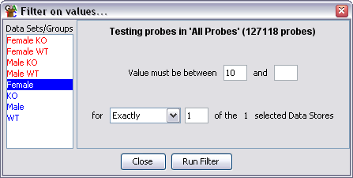

Individual Probe Value Filter
The individual probe value filter allows you to filter probes based on their
currently quantitated values. Each probe is treated individually.

Options
- You need to select one or more DataStores from the list on the left. Data
Sets are shown in red and Data Stores are shown in Blue.
- You can select an upper and a lower limit for the range of values you want
to include. You only have to specify one of these values. If you leave the lower
value blank then anything under the upper cutoff will pass. If you leave the upper
value blank then anything above the lower cutoff will pass.
- Finally you can choose in how many of your selected DataStores a probe needs to fall
within your defined range in order to be included in the final list.